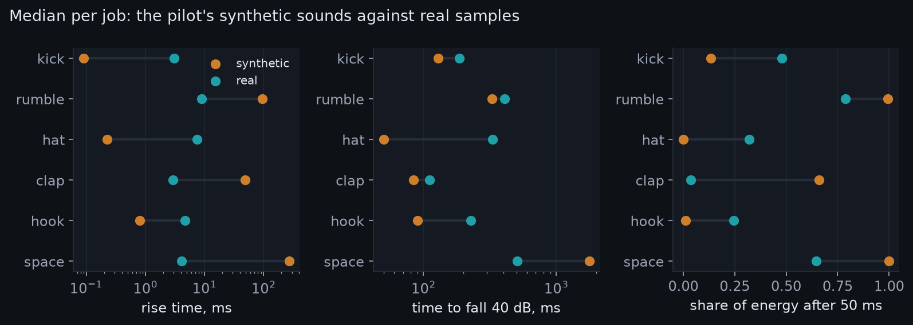
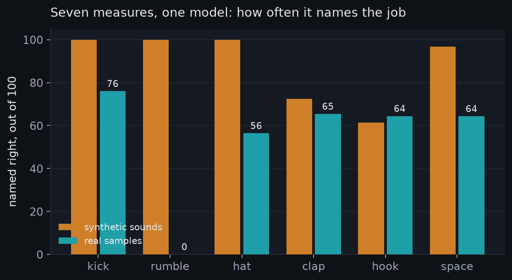
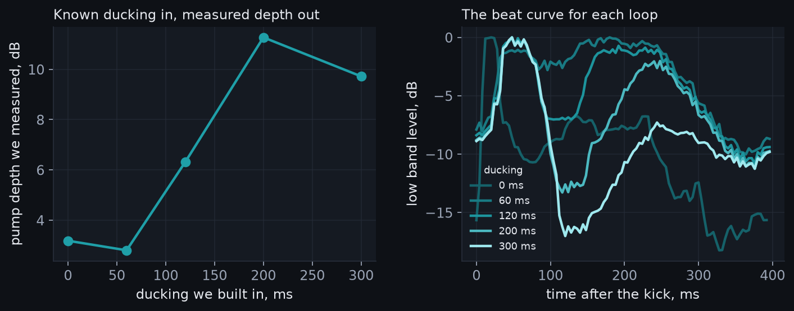
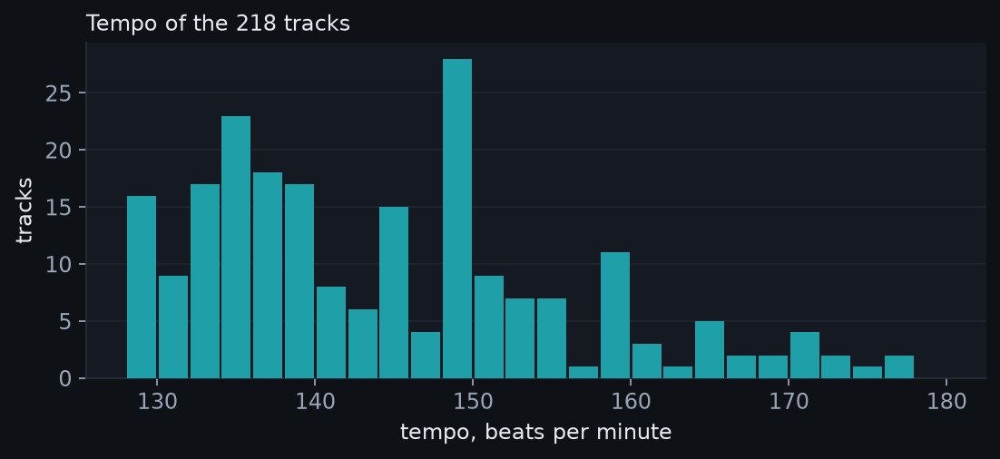
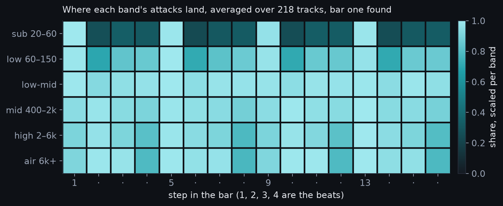
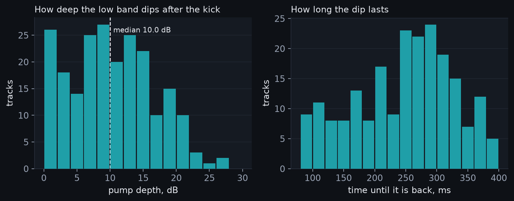
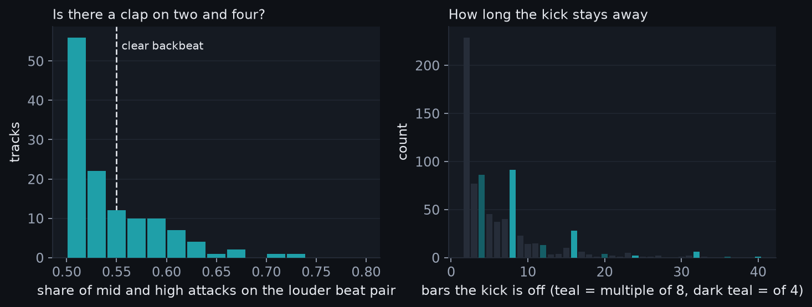
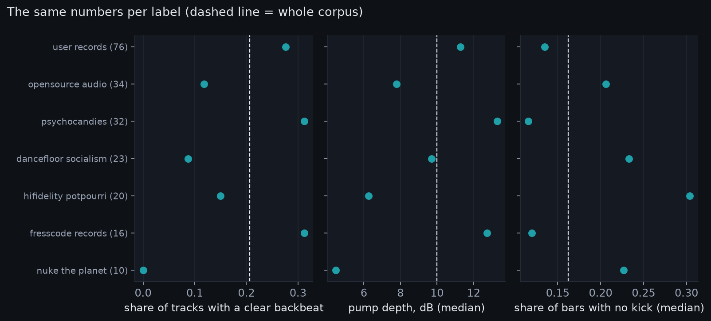

Part one asked what decides a sound's job in hard techno. It ended with a plan in six stages. The plan aimed for ten times more. This page reports what happened when we ran it.
Four stages are done. One is built but waits for people. One waits for producers to answer. Each stage below says what we did and what we found. It also says what went wrong.
The biggest finding is not a number. It is a warning. Our test sounds from part one were too clean. Real sounds act differently. Part one's ranking still holds in shape. But the details need real sounds, and now we have some.
| Stage | Plan | Done? | Headline |
|---|---|---|---|
| 1 | 300 labelled sounds, a classifier | Yes: 718 sounds | Seven measures name the job 80 times in 100 |
| 2 | Ask producers | Built and live | Zero answers so far; the test needs listeners |
| 3 | Measure the pump | Yes | Two new measures; checked on loops with known ducking |
| 4 | Ten times the tracks, find bar one | Yes: 300 measured, 218 kept | Pump 10 dB; clap on 2 and 4 in only one track in five |
| 5 | Real stems | Prepared | None exist under a free licence; the request is written |
| 6 | A role meter | Yes, live | Drop a sound, it names the job and shows why |
The plan asked for 300 sounds with a job label. We made 718. Four hundred are synthetic, forty per sound type. Each one has every setting drawn at random. The ranges are wide but stay inside the job. The other 318 are real samples.
The real ones come from eight free sample packs. All are public domain or CC BY. We read each licence from the archive record itself. The job label comes from the file name. A file called "clap 3" became a clap. Names we could not read were left out.
Then we measured all 718 the same way as part one. Twenty of the measures are simple enough for a web page. We kept to those. A small classifier then tried to name the job. We added one measure at a time. We stopped when a new measure no longer helped.
On the synthetic sounds alone, it was easy. Five measures named the job 96 times in 100. That beat the target of nine in ten.
The five were these. How fast brightness falls. The share of energy after 50 ms. The sub share. The crest. And brightness in the first 100 ms.
Then we tried that model on the real samples. It named the job 29 times in 100. That is barely better than guessing. A bigger model with every measure did little better. It got 37 in 100. The synthetic library did not transfer.

The chart shows the reason. Our claps were built from slow bursts. Real claps hit at once. Our hats stopped dead. Real hats ring.
Our risers and pads were pure and long. Real ones are shorter and more noisy. Part one's sounds were fair examples of each job. They were not fair samples of the range.
So we trained again on all 718 together. Seven measures now name the job 80 times in 100. On the real samples alone it is 66 in 100. On the synthetic ones it is 88. The seven measures are listed below.

Read the real bars with care. Kicks are named right three times in four. Claps, hooks and space sounds are right two times in three. Hats are right just over half the time.
Rumbles are never right. We only found six real rumbles. That is too few to learn from.
Two things limit this. The real packs are drum machines and hand drums. They are not hard techno one-shots. And the labels come from file names, not from ears. A file called "perc" could be almost anything. That is why the hook job is so mixed.
The result we trust most is the shape. Three things do most of the work. Brightness, sub weight, and how long a sound lasts. That matches part one. What changed is the numbers, and our respect for real sounds.
We built the listening test. It is live at the listening page. It plays 40 pairs of sounds. Each pair is one sound with one setting changed.
The settings are the ones part one ranked. Kick pitch, kick decay, drive and click. Hat decay and tone. Clap bursts. And more.
For each pair it asks two things. What job is each sound for? And which of the two fits the job better? Answers save after every pair. So a short visit still counts. No name, email or address is stored.
At the time of writing, nobody has taken it. That is the honest state. Twenty producers would give the missing evidence. If you make this music, please take it. It needs about five minutes for ten pairs.
The pump is a dip after each kick, down low. Producers make it on purpose with ducking. Part one heard it but could not size it. Now we can.
The method is simple. Take the low band, 60 to 150 Hz. Cut it into beats. Leave out the first 90 ms of each beat. That is the kick itself.
Then find the deepest point that climbs back afterwards. The climb is the pump depth. The return time is how long the climb takes. We call it back at 3 dB below the top.

We tested it on loops where we knew the answer. With no ducking, it read 3 dB. That is the floor, from the kick's own tail. With 120 ms of ducking it read 6 dB. With 200 ms it read 11 dB.
The return time grew from 92 ms to 208 ms. So the measure works, above a floor of about 3 dB.
One limit is clear. Ducking shorter than the kick body cannot be seen. So is ducking on a track with no rumble at all. There, the low band just falls silent. The measure then reads a gap, not a pump. We report it anyway and say so.
Part one measured 26 tracks. Eleven came from one producer. The plan asked for 250 tracks and bar one. We got both.
We searched the Internet Archive for four tags. "Hard techno", "hardtechno", "industrial techno" and "schranz". From 2018 on, that gave 901 items. We fetched each item's own record.
We kept only items with a free licence. That means Creative Commons or public domain. That left 267 items holding 1,352 tracks.
Then we chose 300 of them. Each producer got one track before anyone got two. Nobody got more than eight. Mixes and live sets were dropped by name and length.
Two more rules dropped tracks after the fact. One track was made by an AI service. One item was a set of other people's tracks, posted again.
The 300 tracks come from 147 producers. Most are CC BY-NC-ND. 22 are CC0. They run from 2018 to 2026, spread fairly evenly. Every track's page, licence and file ID is in the manifest. The audio itself is never shared.
Part one could find the beat but not bar one. Now it can. The idea is simple. In techno, things change on the downbeat. They change most at the start of a phrase.
We measure how much each beat differs from the four before. Big changes vote for their beat. The beat with the most votes is beat one. Then bars vote the same way for the phrase start. Each vote comes with a strength. Strength one is chance; strength four is every change agreeing.
We tested this on a synthetic track with known bars. We cut a random number of beats off the front. Twelve times out of twelve it found beat one. It also found the group of four bars each time. Eight-bar phrases are harder, because many sections are four bars long.
We kept 218 tracks for the numbers below. 64 ran outside 128 to 180 beats per minute. We left them out. 7 were made by an AI service. 6 were other people's tracks, posted again. 5 failed to run.
The tempo median is 143 beats per minute. The range runs from 128 to 177. Part one's 26 tracks sat at 152. This corpus is slower and more spread out. It holds more of the scene's edges.

The kick is on every beat, as expected. Half of the sub band's attacks land on the four beats. Chance would be one quarter. 113 of 218 tracks are above half.

The pump is real and large. The median depth is 10 dB. 160 of 218 tracks dip more than 6 dB. The median return time is 264 ms. That is most of a beat at this tempo. Producers duck hard and long.

The clap on two and four is not a rule here. Only 45 of 218 tracks show a clear backbeat. That is about one in 5. In the rest, mid and high attacks are even across beats. Either there is no clap, or the kick's click hides it. Both are common in this music.
This surprised us. Part one assumed a backbeat. The synthetic loops all had one. The corpus says the modern sound often does without. That is a finding about the music, not the method. The method finds the clap in synthetic loops every time.

With the backbeat as a second sign, bar one gets firmer. The two signs agree in 190 of 218 tracks. Where they differ, we trust the backbeat. Section changes alone gave a confident answer in 113 tracks.
173 tracks have a kick drop of two bars or more. We counted 762 such drops. The median length is 4 bars. Drops of two bars are the most common. Drops of 4, 8 and 16 bars: 86, 91 and 28.
Does the kick return on the eight-bar line? Often, but not mostly. 29 in 100 returns land on a multiple of eight bars. Chance would be 12 in 100. 42 in 100 land on a multiple of four. Chance would be 25.
Lines of sixteen bars get 16 in 100. Chance would be 6. So the phrase rule is real. It runs two to three times chance. It is not a law. The kick stays on for 14 bars at a stretch, median.
Do the findings hold across people? Producers rarely have three tracks here, by design. So we split by label instead. 7 labels have five tracks or more. The pump median runs from 4 to 13 dB across them. The eight-bar return runs from 21 to 53 in 100.
The backbeat is rare on every label. So the clap finding is not one label's style. The pump and the phrase rule differ more. Two labels with slower, older tracks pump less and break more.

We looked before asking. Since 2018 the archive holds about 190 free sets of stems. None is hard techno. The nearest by title was one mixed file, not stems. So real stems must come from producers.
We wrote the request. It names the eight labels and producers in our corpus. It promises to keep audio private and share only numbers. It offers to send results first.
The text is in the code, ready to send. Sending it is a human's job. It has not been done yet.
The role meter is live at the meter page. Drop a sound on it. It says "this reads as a kick" and shows why. Nothing is sent anywhere. All the work happens in your browser.
Inside is the model with seven measures from stage 1. We built the seven measures again in browser code. Then we checked them against the research code on 60 sounds. All seven agree to within one part in a thousand. The job named agrees on all 60.
It names all ten example sounds right. On real drum machine samples it is right two in three. Treat it as a second opinion, not a judge. When it is wrong, the "why" list shows the odd measure. That is the point. It is a way to learn in public.
| thing | part one | the plan | now |
|---|---|---|---|
| real tracks measured | 26 | 250+ | 218 |
| producers in the corpus | 12 | 60+ | 128 |
| single sounds measured | 10 (synthetic) | 300 labelled, some real | 718 labelled, 318 real |
| listener judgements | 0 | 800 | 0 (the test is live) |
| the pump measured | no | yes | yes |
| bar one known | no | yes | yes |
We have since split the corpus into stems. Part three reports what the stems say.
Three things need people, not code. Take the listening test. Send the stems request. And build a set of real hard techno one-shots. Label them by ear, not by file name. Each would change a number on this page.
Two things are code. Fix the synthetic library. Claps should hit at once and hats should ring. And measure the pump only where a rumble exists. Both are small. Both are in the plan file.
analysis/pump.py and analysis/downbeat.py. Both have a synthetic check you can run.corpus2/. The rules for leaving tracks out are in corpus2/exclude.json.Eight free packs gave the 318 real samples. Each licence was read from the archive record. Thank you to the people who released them.
| Pack | By | Licence | Files used |
|---|---|---|---|
| Mailbox Badger: Public Domain Drum Samples, Volume 1 | Patrick Callan | Public Domain Mark 1.0 | 38 |
| Mailbox Badger: Public Domain Drum Samples, Vol. 2 | Patrick Callan / Mailbox Badger | CC BY 3.0 | 40 |
| Korg Volca Modular drum kit samples | Chris Beckstrom | CC BY 4.0 | 40 |
| 55+ kicks, royalty free sample pack | IR / voldanno | Public Domain Mark 1.0 | 40 |
| Sound Canvas 8850 Drum Samples | Paisley Computer | Public Domain Mark 1.0 | 40 |
| TamTam Drum Kits samples | uploader, not named | CC BY 3.0 | 40 |
| Ejay Virtual Music Studio Drum Machine and Synth Samples | archive uploader | CC0 1.0 | 40 |
| Sonic Pi samples | Sonic Pi contributors, Arovane | CC0 1.0 | 40 |
Every track below was measured under its own licence. Nothing was copied or shared. The table lists artist, title, year, label and licence. Tracks we dropped are not listed.
| Artist | Track | Year | Label | Licence |
|---|---|---|---|---|
| (´･ω･`) | EJECT CORPSES | 2019 | hifidelity_potpourri | CC0 1.0 |
| (´･ω･`) | OH FUCK RIGHT OFF | 2019 | hifidelity_potpourri | CC0 1.0 |
| 3cloneB | Chicks | 2024 | psychocandies-netlabel | CC BY-NC-ND 4.0 |
| 3cloneB | Kanbarra | 2018 | psychocandies-netlabel | CC BY-NC-ND 4.0 |
| 3cloneB | Katapult | 2018 | psychocandies-netlabel | CC BY-NC-ND 4.0 |
| 4ZZZ1 | Black Acid 1 | 2020 | psychocandies-netlabel | CC BY-NC-ND 4.0 |
| 4ZZZ1 | Black Acid 2 | 2020 | psychocandies-netlabel | CC BY-NC-ND 4.0 |
| 4ZZZ1 | Untitled 5 | 2019 | psychocandies-netlabel | CC BY-NC-ND 4.0 |
| Acin | Nuke Vol. 04 | 2019 | nuke-the-planet-netlabel | CC BY-NC-ND 4.0 |
| adscum | adscum - lada | 2018 | opensource_audio | CC BY-SA 4.0 |
| adscum | adscum - sarkas | 2018 | opensource_audio | CC BY-SA 4.0 |
| AFFLICTED | District | 2020 | fresscode-records-netlabel | CC BY-NC-ND 4.0 |
| AFFLICTED | Dr. Who 1 | 2019 | psychocandies-netlabel | CC BY-NC-ND 4.0 |
| Angel's Domain | Soulful Hell | 2026 | hifidelity_potpourri | CC BY-NC-SA 4.0 |
| Assey | don't sleep(mastered) | 2022 | opensource_audio | CC BY-NC-ND 4.0 |
| Atheist | If Jesus Was A Raver | 2023 | dancefloor-socialism-netlabel | CC BY-NC-ND 4.0 |
| Atheist | The Horns Of Jericho | 2023 | dancefloor-socialism-netlabel | CC BY-NC-ND 4.0 |
| Ayako Mori, Inquieto | ayako mori - - your will [inquieto remix] | 2025 | opensource_audio | CC BY-NC-ND 4.0 |
| Ayako Mori, Inquieto | ayako mori - - éire - land of the wind (inquieto remix) | 2025 | opensource_audio | CC BY-NC-ND 4.0 |
| Ayako Mori, Inquieto | ayako mori - bodhisattva (inquieto remix) | 2024 | opensource_audio | CC BY-NC-ND 4.0 |
| BELLKATZE | Kölnisch Wasser | 2020 | psychocandies-netlabel | CC BY-NC-ND 4.0 |
| BELLKATZE | Lightweight Memphis | 2020 | psychocandies-netlabel | CC BY-NC-ND 4.0 |
| BELLKATZE | Modern War | 2020 | psychocandies-netlabel | CC BY-NC-ND 4.0 |
| Berba PT | 911 | 2023 | opensource_audio | CC BY-ND 4.0 |
| Berba PT | Cooking Cookies | 2023 | opensource_audio | CC BY-ND 4.0 |
| Berba PT | Dishes | 2023 | opensource_audio | CC BY-ND 4.0 |
| Bitterfeld | Death Is Coming | 2023 | dancefloor-socialism-netlabel | CC BY-NC-ND 4.0 |
| Blank Banshee | Hall of Mirrors | 2023 | hifidelity_potpourri | CC0 1.0 |
| Blank Banshee | Revelations | 2023 | hifidelity_potpourri | CC0 1.0 |
| Brutal Rave Bastards | Nuke Vol. 10 | 2020 | nuke-the-planet-netlabel | CC BY-NC-ND 4.0 |
| Brutal Rave Bastards | NUKE Vol. 18 | 2023 | nuke-the-planet-netlabel | CC BY-NC-ND 4.0 |
| Cement Tea | Chip Withdrawal | 2023 | psychocandies-netlabel | CC BY-NC-ND 4.0 |
| Cement Tea | Kubizt | 2023 | dancefloor-socialism-netlabel | CC BY-NC-ND 4.0 |
| Combat Killer | Combat Troops | 2024 | fresscode-records-netlabel | CC BY-NC-ND 4.0 |
| Combat Killer | Defluxcompensator | 2024 | fresscode-records-netlabel | CC BY-NC-ND 4.0 |
| Combat Killer | Kevlar | 2024 | fresscode-records-netlabel | CC BY-NC-ND 4.0 |
| Death In Paradise | Nuke Vol. 11 | 2020 | nuke-the-planet-netlabel | CC BY-NC-ND 4.0 |
| Der schwarze Adel | Fuck Society | 2023 | psychocandies-netlabel | CC BY-NC-ND 4.0 |
| Der schwarze Adel | When The Truth Is Found To Be LIES | 2023 | psychocandies-netlabel | CC BY-NC-ND 4.0 |
| DiZE7 | Two Specifications | 2019 | psychocandies-netlabel | CC BY-NC-ND 4.0 |
| DJ Muthafukka | Turkish Delight (THE D3VI7 Psy Remix) | 2020 | dancefloor-socialism-netlabel | CC BY-NC-ND 4.0 |
| Dr. Walker | Very Bad Acid (Sascha Müller Remix) | 2026 | dancefloor-socialism-netlabel | CC BY-NC-ND 4.0 |
| duality micro | Sidewinder | 2023 | dancefloor-socialism-netlabel | CC BY-NC-ND 4.0 |
| duality micro & Sascha Müller | Press Start (Edit02) | 2024 | dancefloor-socialism-netlabel | CC BY-NC-ND 4.0 |
| Ego Drums | Nuke Vol. 09 | 2020 | nuke-the-planet-netlabel | CC BY-NC-ND 4.0 |
| El Atalaya | Respect My Ability (Sascha Müller Hard Acid Remix) | 2019 | psychocandies-netlabel | CC BY-NC-ND 4.0 |
| El Atalaya, Sascha Müller | Respect My Ability (Sascha Müller Hard Acid Remix) | 2019 | psychocandies-netlabel | CC BY-NC-ND 4.0 |
| Erick Jaeger | cleansing | 2024 | opensource_audio | CC BY-ND 4.0 |
| eVADE | NLD25 | 2025 | dancefloor-socialism-netlabel | CC BY-NC-ND 4.0 |
| eVADE | Noises (Edit) | 2023 | dancefloor-socialism-netlabel | CC BY-NC-ND 4.0 |
| Hanzzo & Sascha Müller | Nuke Vol. 22 | 2025 | nuke-the-planet-netlabel | CC BY-NC-ND 4.0 |
| Inquieto | inquieto - 5am en el bella | 2024 | opensource_audio | CC BY-NC-ND 4.0 |
| Inquieto | inquieto - baila milodon | 2025 | hifidelity_potpourri | CC BY-NC-ND 4.0 |
| Inquieto | inquieto - de madrugada | 01/0 | opensource_audio | CC BY-NC-ND 4.0 |
| Jens Mueller, AFFLICTED | Marudi (AFFLICTED Remix) | 2021 | psychocandies-netlabel | CC BY-NC-ND 4.0 |
| Jens Mueller, P.T.B.S. | Marudi (P.T.B.S. Remix) | 2021 | psychocandies-netlabel | CC BY-NC-ND 4.0 |
| Jerzz & Sascha Müller | Nuke Vol. 21 | 2025 | nuke-the-planet-netlabel | CC BY-NC-ND 4.0 |
| Johann Schwengel | Love | 2018 | fresscode-records-netlabel | CC BY-NC-ND 4.0 |
| Johann Schwengel | Manhatten | 2023 | fresscode-records-netlabel | CC BY-NC-ND 4.0 |
| Kasma | Nuke Vol. 08 | 2020 | nuke-the-planet-netlabel | CC BY-NC-ND 4.0 |
| Klangbild | Dinkelschock | 2022 | opensource_audio | CC0 1.0 |
| Klangbild | Klotzgeschiebe | 2022 | opensource_audio | CC0 1.0 |
| KNARZ Maschine | ACID KNARZ 1 | 2022 | psychocandies-netlabel | CC BY-NC-ND 4.0 |
| KNARZ Maschine | ACID KNARZ 2 | 2022 | psychocandies-netlabel | CC BY-NC-ND 4.0 |
| KNARZ Maschine | ACID KNARZ 3 | 2022 | psychocandies-netlabel | CC BY-NC-ND 4.0 |
| Maschienekrieger KR52 | Zeit (Rmx Maschinenkrieger KR52) | 2022 | opensource_audio | CC BY-NC-ND 4.0 |
| Matias Jose Espejo Antognoli = Svecent | sex production | 2023 | opensource_audio | CC BY-NC-ND 4.0 |
| Mr. Jason | Mentalin | 2025 | dancefloor-socialism-netlabel | CC BY-NC-ND 4.0 |
| Nitrogene | Lost Transmission Planet Earth | 2024 | dancefloor-socialism-netlabel | CC BY-NC-ND 4.0 |
| Ohrchitekt | Vollpfosten | 2024 | dancefloor-socialism-netlabel | CC BY-NC-ND 4.0 |
| P.B.R. | Death Row | 2024 | psychocandies-netlabel | CC BY-NC-ND 4.0 |
| P.B.R. | Dynamic Range | 2024 | psychocandies-netlabel | CC BY-NC-ND 4.0 |
| P.T.B.S. | B.T.M. (KNARZ Maschine Remix) | 2022 | dancefloor-socialism-netlabel | CC BY-NC-ND 4.0 |
| P.T.B.S. & Sascha Müller | Buschlecke | 2025 | dancefloor-socialism-netlabel | CC BY-NC-ND 4.0 |
| P.T.B.S. & Sascha Müller | Content | 2025 | dancefloor-socialism-netlabel | CC BY-NC-ND 4.0 |
| P.T.B.S. & Sascha Müller | Waveshaper | 2025 | dancefloor-socialism-netlabel | CC BY-NC-ND 4.0 |
| P.T.B.S., Hanzzo & THE D3VI7 | Space | 2024 | dancefloor-socialism-netlabel | CC BY-NC-ND 4.0 |
| P.T.B.S., Sascha Müller | Out Of Control (Sascha Müller Breakbeat Remix) | 2018 | psychocandies-netlabel | CC BY-NC-ND 4.0 |
| Pagna | Nuke Vol. 07 | 2019 | nuke-the-planet-netlabel | CC BY-NC-ND 4.0 |
| Pakistan Techno Force | Bouncer | 2024 | fresscode-records-netlabel | CC BY-NC-ND 4.0 |
| Pakistan Techno Force | Randomise | 2024 | fresscode-records-netlabel | CC BY-NC-ND 4.0 |
| Pakistand Techno Force | Creed | 2018 | fresscode-records-netlabel | CC BY-NC-ND 4.0 |
| Pakistand Techno Force | DropBall | 2018 | fresscode-records-netlabel | CC BY-NC-ND 4.0 |
| Pakistand Techno Force | Katakombs | 2018 | fresscode-records-netlabel | CC BY-NC-ND 4.0 |
| Pasquale Maassen | Demonica | 2026 | fresscode-records-netlabel | CC BY-NC-ND 4.0 |
| Pasquale Maassen | Stompin | 2025 | dancefloor-socialism-netlabel | CC BY-NC-ND 4.0 |
| Pasquale Maassen Vs. Peter Mummert | Ho Em Ah | 2025 | dancefloor-socialism-netlabel | CC BY-NC-ND 4.0 |
| Psy Shepherd X Ethnomite Pux X Invisible Illusion | distant signals - psy shepherd x invisible illusion - the desert ears | 2023 | le-colibri-necrophile | CC BY-NC-SA 4.0 |
| Psy Shepherd X Ethnomite Pux X Invisible Illusion | electronic quicksands ii - ethnomite pux - the desert ears | 2023 | le-colibri-necrophile | CC BY-NC-SA 4.0 |
| Psy Shepherd X Ethnomite Pux X Invisible Illusion | electronic quicksands iv - ethnomite pux - the desert ears | 2023 | le-colibri-necrophile | CC BY-NC-SA 4.0 |
| Rabbits On Speed | Nuke Vol. 12 | 2020 | nuke-the-planet-netlabel | CC BY-NC-ND 4.0 |
| Rotura XXL, Inquieto | rotura xxl - the crow (inquieto remix) | 2024 | opensource_audio | CC BY-NC-ND 4.0 |
| RU DEAD 42 | Acid To Acid | 2023 | psychocandies-netlabel | CC BY-NC-ND 4.0 |
| Sacro Servo | Depredador | 2026 | hifidelity_potpourri | CC BY-ND 4.0 |
| Sans-Fin | Zeit (Rmx Sans-Fin) | 2022 | opensource_audio | CC BY-NC-ND 4.0 |
| SansetatciviL | 01 2021 fight.club 2 flac | 2022 | hifidelity_potpourri | CC BY-NC-ND 4.0 |
| SansetatciviL | 02 2021 stalker 79 (pt1) flac | 2022 | hifidelity_potpourri | CC BY-NC-ND 4.0 |
| SansetatciviL | 02 2021 stalker 79 (pt2) flac | 2022 | hifidelity_potpourri | CC BY-NC-ND 4.0 |
| Sascha Muller | City Rain | 2020 | hifidelity_potpourri | CC BY-NC-ND 4.0 |
| Sascha Muller | Streamin Black Hole | 2021 | user-records-netlabel | CC BY-NC-ND 4.0 |
| Sascha Müller | (punkt 1) 01. sascha muller - 1.01 | 2021 | hifidelity_potpourri | Public Domain Mark 1.0 |
| Sascha Müller | (punkt 1) 02. sascha muller - 1.02 | 2021 | hifidelity_potpourri | Public Domain Mark 1.0 |
| Sascha Müller | (punkt 10) 01. sascha muller - 10.01 | 2021 | hifidelity_potpourri | Public Domain Mark 1.0 |
| Sascha Müller | (punkt 10) 02. sascha muller - 10.02 | 2021 | hifidelity_potpourri | Public Domain Mark 1.0 |
| Sol 1 | Wild Thing | 2022 | fresscode-records-netlabel | CC BY-NC-ND 4.0 |
| Stahlschlag | Zeit (Rmx Stahlschlag) | 2022 | opensource_audio | CC BY-NC-ND 4.0 |
| Stanley Hottek | ColaKevin | 2021 | opensource_audio | CC BY-ND 4.0 |
| Stanley Hottek | Flame | 2021 | hifidelity_potpourri | CC BY-NC-ND 4.0 |
| Stanley Hottek | Stupid Love | 2024 | dancefloor-socialism-netlabel | CC BY-NC-ND 4.0 |
| Steven Casteel | 01 - drum & bass : dnb : liquid : jungle : breakbeat | 2024 | opensource_audio | CC0 1.0 |
| Steven Casteel | 02 - guitar | 2024 | opensource_audio | CC0 1.0 |
| Stromtod | Bootstrap | 2022 | opensource_audio | CC BY-NC-ND 4.0 |
| Stromtod | Ein Endloser Kreislauf | 2022 | opensource_audio | CC BY-NC-ND 4.0 |
| Stromtod | Reaktor | 2022 | opensource_audio | CC BY-NC-ND 4.0 |
| Svecent | Pro opportunity or not... | 2022 | opensource_audio | CC BY-NC-SA 4.0 |
| TechnoBotts | Dampframme | 2018 | fresscode-records-netlabel | CC BY-NC-ND 4.0 |
| TechnoBotts | In Motion | 2018 | fresscode-records-netlabel | CC BY-NC-ND 4.0 |
| The 808 Hillbillys | Untitled 3 | 2019 | psychocandies-netlabel | CC BY-NC-ND 4.0 |
| THE D3VI7 | All-Time | 2024 | psychocandies-netlabel | CC BY-NC-ND 4.0 |
| THE D3VI7 | Ausstieg | 2023 | psychocandies-netlabel | CC BY-NC-ND 4.0 |
| THE D3VI7 | Back To House | 2022 | fresscode-records-netlabel | CC BY-NC-ND 4.0 |
| THE D3VI7, Jens Mueller | Computer Stimulation (Jens Mueller Remix) | 2021 | psychocandies-netlabel | CC BY-NC-ND 4.0 |
| TieFenRauSch | Baikal | 2025 | dancefloor-socialism-netlabel | CC BY-NC-ND 4.0 |
| Unknown War Heads | Daddys Riders | 2019 | psychocandies-netlabel | CC BY-NC-ND 4.0 |
| Unknown War Heads | Kalium | 2019 | psychocandies-netlabel | CC BY-NC-ND 4.0 |
| Unknown War Heads | Patty Pinku | 2019 | psychocandies-netlabel | CC BY-NC-ND 4.0 |
| USER Records | (user015) 02. user22647388499 - cornelius_fever ep | 2021 | user-records-netlabel | CC BY-NC-ND 4.0 |
| user02358844564 | Asche Zu Asche | 2025 | user-records-netlabel | CC BY-NC-ND 4.0 |
| user04374532748 | Acid Hell | 2026 | user-records-netlabel | CC BY-NC-ND 4.0 |
| user04574546444 | 606 + 303 = 904 | 2026 | user-records-netlabel | CC BY-NC-ND 4.0 |
| user04574546444 | Mistaken Identity_ | 2026 | user-records-netlabel | CC BY-NC-ND 4.0 |
| user04821460007 | Escape | 2025 | user-records-netlabel | CC BY-NC-ND 4.0 |
| user04821460007 | The Agent Girls | 2025 | user-records-netlabel | CC BY-NC-ND 4.0 |
| user08200140031 | Untitled 1-1 | 2023 | user-records-netlabel | CC BY-NC-ND 4.0 |
| user08200140031 | Untitled 2-1 | 2023 | user-records-netlabel | CC BY-NC-ND 4.0 |
| user08779333356 | Dooms Day | 2021 | user-records-netlabel | CC BY-NC-ND 4.0 |
| user08779333356 | Geek | 2021 | user-records-netlabel | CC BY-NC-ND 4.0 |
| user10000667856 | The Heart Of Africa | 2021 | user-records-netlabel | CC BY-NC-ND 4.0 |
| user10000667856 | Zapata QUA | 2021 | user-records-netlabel | CC BY-NC-ND 4.0 |
| user10005668945 | Untitled 11 | 2021 | user-records-netlabel | CC BY-NC-ND 4.0 |
| user11000044425 | Segment Shuffler | 2025 | user-records-netlabel | CC BY-NC-ND 4.0 |
| user11000044425 | Spandau | 2025 | user-records-netlabel | CC BY-NC-ND 4.0 |
| user11188078453 | 606 + 303 = 902 | 2026 | user-records-netlabel | CC BY-NC-ND 4.0 |
| user11375674564 | Reformhaus | 2025 | user-records-netlabel | CC BY-NC-ND 4.0 |
| user11508366478 | Nightcrawler | 2021 | user-records-netlabel | CC BY-NC-ND 4.0 |
| user11508366478 | No10_A18 | 2021 | user-records-netlabel | CC BY-NC-ND 4.0 |
| user12121325544 | Seaside | 2026 | user-records-netlabel | CC BY-NC-ND 4.0 |
| user12400003580 | The B-Master | 2025 | user-records-netlabel | CC BY-NC-ND 4.0 |
| user12746456775 | Untitled135 | 2026 | user-records-netlabel | CC BY-NC-ND 4.0 |
| user17883214582 | 5G | 2023 | user-records-netlabel | CC BY-NC-ND 4.0 |
| user17883214582 | You Cock Fukker | 2023 | user-records-netlabel | CC BY-NC-ND 4.0 |
| user20684003752 | Euroman | 2021 | user-records-netlabel | CC BY-NC-ND 4.0 |
| user22067782234 | Fluff Boyz In The Hood | 2023 | user-records-netlabel | CC BY-NC-ND 4.0 |
| user22067782234 | The A-Master | 2023 | user-records-netlabel | CC BY-NC-ND 4.0 |
| user22233300085 | Der Eiswagen | 2024 | user-records-netlabel | CC BY-NC-ND 4.0 |
| user22233300085 | Köüenick | 2024 | user-records-netlabel | CC BY-NC-ND 4.0 |
| user23564112514 | Untitled 5-1 | 2022 | user-records-netlabel | CC BY-NC-ND 4.0 |
| user23564112514 | Untitled 6-1 | 2022 | user-records-netlabel | CC BY-NC-ND 4.0 |
| user25244578642 | 606 + 303 = 903 | 2026 | user-records-netlabel | CC BY-NC-ND 4.0 |
| user25244578642 | The Sequencer | 2026 | user-records-netlabel | CC BY-NC-ND 4.0 |
| user33886060077 | Country Boy | 2021 | user-records-netlabel | CC BY-NC-ND 4.0 |
| user34567443478 | Untitled 12-1 | 2023 | user-records-netlabel | CC BY-NC-ND 4.0 |
| user41254475475 | Blue Line | 2026 | user-records-netlabel | CC BY-NC-ND 4.0 |
| user41254475475 | Die Apokalypse | 2026 | user-records-netlabel | CC BY-NC-ND 4.0 |
| user44856009320 | The Big Manner | 2021 | user-records-netlabel | CC BY-NC-ND 4.0 |
| user45682211145 | Untitled 11-1 | 2023 | user-records-netlabel | CC BY-NC-ND 4.0 |
| user54466587890 | Untitled 1 | 2021 | user-records-netlabel | CC BY-NC-ND 4.0 |
| user54466587890 | Voltmeter | 2021 | user-records-netlabel | CC BY-NC-ND 4.0 |
| user54875487546 | Expander | 2026 | user-records-netlabel | CC BY-NC-ND 4.0 |
| user55454557544 | Rolling KNARZ | 2026 | user-records-netlabel | CC BY-NC-ND 4.0 |
| user55454557544 | Shady Blinder | 2026 | user-records-netlabel | CC BY-NC-ND 4.0 |
| user55864367882 | Darkness | 2026 | user-records-netlabel | CC BY-NC-ND 4.0 |
| user55864367882 | Deeper | 2026 | user-records-netlabel | CC BY-NC-ND 4.0 |
| user66788884902 | The Face Of Destruction | 2021 | user-records-netlabel | CC BY-NC-ND 4.0 |
| user66788884902 | Untitled 9-1 | 2021 | user-records-netlabel | CC BY-NC-ND 4.0 |
| user66866546841 | Acid Embargo (Part 1) | 2026 | user-records-netlabel | CC BY-NC-ND 4.0 |
| user66866546841 | Cold Shaker | 2026 | user-records-netlabel | CC BY-NC-ND 4.0 |
| user72467634894 | Fear | 2026 | user-records-netlabel | CC BY-NC-ND 4.0 |
| user75468548102 | No Big Deal | 2026 | user-records-netlabel | CC BY-NC-ND 4.0 |
| user77856934351 | Alante | 2021 | user-records-netlabel | CC BY-NC-ND 4.0 |
| user78654786842 | 3 a.m. | 2025 | user-records-netlabel | CC BY-NC-ND 4.0 |
| user78654786842 | PullOver | 2025 | user-records-netlabel | CC BY-NC-ND 4.0 |
| user78954441235 | Cosmic Function | 2026 | user-records-netlabel | CC BY-NC-ND 4.0 |
| user78954441235 | Trip To The Moon | 2026 | user-records-netlabel | CC BY-NC-ND 4.0 |
| user80254894876 | Newsline Of the Agent Death | 2024 | user-records-netlabel | CC BY-NC-ND 4.0 |
| user80254894876 | Sympathikus Stimmulation | 2024 | user-records-netlabel | CC BY-NC-ND 4.0 |
| user83254130235 | The Gentleman | 2026 | user-records-netlabel | CC BY-NC-ND 4.0 |
| user84564100548 | Kirschblut | 2024 | user-records-netlabel | CC BY-NC-ND 4.0 |
| user84564100548 | Klappbong | 2024 | user-records-netlabel | CC BY-NC-ND 4.0 |
| user85694743322 | Kurdish Violin Compressor | 2021 | user-records-netlabel | CC BY-NC-ND 4.0 |
| user85694743322 | Untitled 8 | 2021 | user-records-netlabel | CC BY-NC-ND 4.0 |
| user87742587412 | Border | 2022 | user-records-netlabel | CC BY-NC-ND 4.0 |
| user87742587412 | Oha | 2022 | user-records-netlabel | CC BY-NC-ND 4.0 |
| user88745774467 | Untitled 3-1 | 2022 | user-records-netlabel | CC BY-NC-ND 4.0 |
| user88745774467 | Untitled 4-1 | 2022 | user-records-netlabel | CC BY-NC-ND 4.0 |
| user88800903441 | Barada | 2023 | user-records-netlabel | CC BY-NC-ND 4.0 |
| user88800903441 | Eisenbass | 2023 | user-records-netlabel | CC BY-NC-ND 4.0 |
| user89945677442 | Machine Music | 2026 | user-records-netlabel | CC BY-NC-ND 4.0 |
| user89945677442 | Totem | 2026 | user-records-netlabel | CC BY-NC-ND 4.0 |
| user99457585343 | Death Of An Agent | 2025 | user-records-netlabel | CC BY-NC-ND 4.0 |
| user99457585343 | We Want Freedom | 2025 | user-records-netlabel | CC BY-NC-ND 4.0 |
| user99899889988 | Cavemen | 2026 | opensource_audio | CC BY-NC-ND 4.0 |
| user99899889988 | Energy | 2026 | opensource_audio | CC BY-NC-ND 4.0 |
| VA | bassinlove - cant stand it | 2024 | hifidelity_potpourri | CC BY-NC-ND 4.0 |
| VA | behlial - cocaina | 2024 | hifidelity_potpourri | CC BY-NC-ND 4.0 |
| VA | carles dj - mising | 2024 | hifidelity_potpourri | CC BY-NC-ND 4.0 |
| VA | coyote paul - will this madness ever end | 2024 | hifidelity_potpourri | CC BY-NC-ND 4.0 |
| Valovoima | 2026 | pakkaslumi | CC BY-NC-ND 4.0 | |
| Vislumbres | composición | 2025 | opensource_audio | CC BY 4.0 |
| Vislumbres | ne | 2025 | opensource_audio | CC BY 4.0 |
| Vislumbres | persc | 2025 | opensource_audio | CC BY 4.0 |
| void:r | Gestohlene Zeit | 2023 | opensource_audio | CC BY-ND 4.0 |
| void:r | Kalter Schweiß | 2023 | opensource_audio | CC BY-ND 4.0 |
| void:r | Nachtzug | 2023 | opensource_audio | CC BY-ND 4.0 |
| Widerwille | Entasis | 2024 | dancefloor-socialism-netlabel | CC BY-NC-ND 4.0 |
| X.D.D. | Cuba Connection | 2022 | xdd-x-static-dance-departement-netlabel | CC BY-NC-ND 4.0 |
| X.D.D. | Dark Elements | 2022 | xdd-x-static-dance-departement-netlabel | CC BY-NC-ND 4.0 |
| X.D.D. | Exit E | 2022 | xdd-x-static-dance-departement-netlabel | CC BY-NC-ND 4.0 |